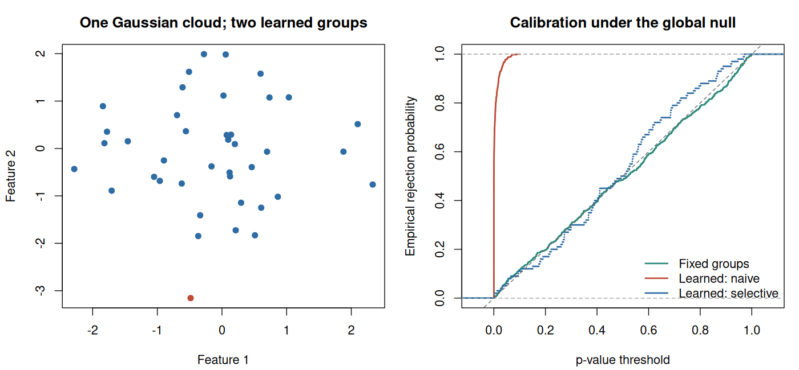

12. Selective inference after hierarchical clustering#
Learning objectives#
After this chapter, you should be able to define a selected-group mean contrast, explain why ordinary cluster comparisons can fail, derive the one-dimensional radial perturbation underlying a selective test, and distinguish exact known-variance inference from a plug-in analysis.
Clustering constructs labels from observations. If those labels are then treated as pre-existing scientific groups, an ordinary test ignores the construction step. A visually separated partition is especially easy to produce because separation is an objective of the clustering algorithm itself.
12.1 State the model before interpreting a cluster#
Consider \(n\) independent observations of \(q\) features:
The means \(\mu_i\) are fixed unknown vectors and may differ across observations. This is a Gaussian mean model, not an assumed finite-mixture model. Let \(\mathcal C(X)\) denote the partition returned by a specified clustering algorithm with a fixed number of clusters \(K\).
For two non-overlapping index sets \(C_1,C_2\) appearing in that partition, define
The null concerns the underlying means of the observations in these particular groups. It does not say that the entire population has one cluster, that \(K\) is correct, or that the groups represent two biological types. Those are different scientific questions requiring other models or evidence.
The framework and exact hierarchical-clustering procedure were developed by Gao, Bien, and Witten (2024). The article appeared online in 2022; the journal volume is dated 2024.
12.2 Why the ordinary reference distribution fails#
For fixed groups, let
Then \(\|\nu\|^2=|C_1|^{-1}+|C_2|^{-1}\) and, under the fixed-group null,
After clustering, \(\nu\) depends on \(X\). Substituting the selected \(\nu\) into the fixed-group formula generally changes its null distribution. This is not solved by declaring the selected labels fixed after looking at the data: the repeated-sampling procedure still selects them.
Example 12.1 — A significant difference created by the partition
Suppose two estimated groups each contain ten observations, \(\sigma=1\), and their observed mean difference is \((1.2,0)^\top\). A fixed-group calculation gives
This number does not account for the fact that the groups were chosen to separate the observations. Group sizes and means alone are insufficient to compute the selective p-value: the clustering algorithm and the geometry of the full dataset determine which alternative datasets would produce the same groups.
12.3 Reduce the problem to one varying distance#
Write the observed contrast length as \(r=\|x^\top\nu\|\) and its direction as \(u=x^\top\nu/r\). Under the continuous model, \(r=0\) has probability zero. Define
The data decompose into a component orthogonal to the contrast and a component along it:
Condition on \(P_\nu^\perp X=P_\nu^\perp x\) and on the direction of \(X^\top\nu\) being \(u\). The remaining scalar is the contrast length. A dataset with candidate length \(\phi\geq0\) is
Under the null, before imposing the clustering event, this length follows
The notation \(\Phi_{\mathrm{rad}}\) denotes a random radius here, not the normal CDF. Gaussian independence separates the orthogonal component, and spherical symmetry under the null separates radius from direction.
Example 12.2 — What the perturbation actually moves
If both groups have size ten, \(\|\nu\|^2=0.2\). Increasing the contrast length by \(\Delta\) moves every observation in \(C_1\) by \(+\Delta u/2\) and every observation in \(C_2\) by \(-\Delta u/2\). Observations outside these groups remain unchanged.
Within-group pairwise differences remain unchanged. The selected groups are pulled apart or pushed together while preserving the nuisance information on which we conditioned. With unequal sizes, the two shifts have unequal magnitudes so that the overall weighted mean is still preserved.
12.4 The truncation set remembers the algorithm#
Define
A selective p-value is the conditional upper tail
The denominator conditions on observing those groups. The additional conditioning above removes nuisance parameters. Computing \(\mathcal S\) is the algorithmic challenge: as \(\phi\) varies, different merges can occur in the dendrogram.
For several hierarchical linkages with squared Euclidean distance, the authors provide an efficient exact characterization. The selected set can contain multiple intervals. A coarse grid of radii is useful for visualization, but it is not an exact replacement for that characterization; narrow intervals or tail intervals can be missed.
For teaching, use average linkage and squared Euclidean distance exactly as in the authors’ tutorial. Changing the metric while retaining a formula derived for another metric is not a harmless implementation choice.
12.5 What must be fixed or accounted for?#
The first laboratory fixes \(K=2\), leaving a single pair. It also fixes the distance, linkage, features, and noise scale. If an analyst searches across values of \(K\), chooses features because they make the separation look stronger, or selects a pair after inspecting its test statistic, the stated conditioning event may no longer describe the full procedure.
The package can estimate the noise scale when it is not supplied. That practical default does not convert an unknown-variance problem into the finite-sample known-variance theorem. Our simulation supplies \(\sigma=1\). An application should distinguish an exact guarantee under known covariance from an approximation or asymptotic argument involving estimated covariance.
Likewise, testing every pair introduces a multiple-testing problem. A valid selected-pair p-value alone does not assert familywise or false-discovery-rate control for an arbitrary collection of pairwise tests.
12.6 Why ordinary row splitting can still fail#
Imagine clustering training observations, training a classifier to reproduce those labels, assigning held-out observations, and testing the held-out features between assigned groups. The assignment uses each held-out observation’s own features. Those same features then determine both the group and the test statistic. The null for the selected held-out groups remains data-dependent.
Independent replicate measurements of the same units can provide a different route: discover groups from one measurement and compare their underlying means with an independent measurement, under a suitable joint model. Distribution-specific data thinning is another approach discussed in Chapter 14. Neither construction follows merely from calling some rows a test set.
12.7 Reproducible R laboratory#
The required base-R experiment contrasts a fixed partition with average-linkage clustering under one Gaussian cloud. It demonstrates the calibration failure directly. When the authors’ clusterpval package is installed, the same script additionally executes its exact known-variance procedure and records how many runs succeeded. It reports explicit status if that extension is unavailable; it never labels a base-R naïve test as selective inference.
Code
# Chapter 12: Gaussian cluster comparisons.
# Required experiment uses base R. The authors' exact method runs when installed.
set.seed(2026102112)
options(width = 145)
n <- 40L
q <- 2L
sigma <- 1
repetitions <- 500L
alpha <- 0.05
wald_p <- function(x, groups, known_sigma = 1) {
stopifnot(length(unique(groups)) == 2L)
g1 <- groups == sort(unique(groups))[1L]
difference <- colMeans(x[g1, , drop = FALSE]) -
colMeans(x[!g1, , drop = FALSE])
variance <- known_sigma^2 * (1 / sum(g1) + 1 / sum(!g1))
pchisq(sum(difference^2) / variance, df = ncol(x), lower.tail = FALSE)
}
samples <- lapply(seq_len(repetitions), function(i) matrix(rnorm(n * q), n, q))
fixed_groups <- rep(1:2, each = n / 2L)
fixed_p <- learned_p <- numeric(repetitions)
for (b in seq_len(repetitions)) {
x <- samples[[b]]
tree <- hclust(dist(x)^2, method = "average")
learned_groups <- cutree(tree, k = 2L)
fixed_p[b] <- wald_p(x, fixed_groups, sigma)
learned_p[b] <- wald_p(x, learned_groups, sigma)
}
summarize_p <- function(method, values) {
rate <- mean(values <= alpha)
mc_interval <- binom.test(sum(values <= alpha), length(values))$conf.int
data.frame(method = method, runs = length(values), rejection_rate = rate,
monte_carlo_se = sqrt(rate * (1 - rate) / length(values)),
mc_lower = mc_interval[1L], mc_upper = mc_interval[2L])
}
cat("Global null: independent N_2(0, I) observations; fixed K = 2\n")
print(rbind(summarize_p("Fixed groups: ordinary Wald", fixed_p),
summarize_p("Learned groups: naive Wald", learned_p)),
row.names = FALSE, digits = 4)
cat("\nExample 12.1: naive p-value for squared standardized contrast 7.2 =",
format(pchisq(7.2, df = 2, lower.tail = FALSE), digits = 6), "\n")
cat("mc_lower/mc_upper: exact 95% binomial intervals for simulation rejection probabilities.\n")
selective_plot <- NULL
if (requireNamespace("clusterpval", quietly = TRUE)) {
selective_reps <- min(100L, repetitions)
selective_p <- rep(NA_real_, selective_reps)
errors <- character()
for (b in seq_len(selective_reps)) {
x <- samples[[b]]
tree <- hclust(dist(x)^2, method = "average")
fit <- tryCatch(
clusterpval::test_hier_clusters_exact(
x, link = "average", hcl = tree, K = 2L,
k1 = 1L, k2 = 2L, sig = sigma
),
error = function(e) e
)
if (inherits(fit, "error")) {
errors <- c(errors, conditionMessage(fit))
} else {
selective_p[b] <- fit$pval
}
}
successful <- is.finite(selective_p) & selective_p >= 0 & selective_p <= 1
cat("\nAuthors' exact procedure EXECUTED; clusterpval version",
as.character(utils::packageVersion("clusterpval")), "\n")
cat("Successful finite p-values:", sum(successful), "of", selective_reps, "\n")
if (all(successful)) {
selective_plot <- selective_p
print(summarize_p("Known-variance selective test", selective_p),
row.names = FALSE, digits = 4)
} else {
cat("Calibration summary withheld because some selective runs failed.\n")
if (length(errors)) print(unique(errors))
}
cat("The selective Monte Carlo check is small; its standard error matters.\n")
} else {
cat("\nOptional exact selective procedure NOT EXECUTED: clusterpval is not installed.\n")
cat("Author installation instructions: https://lucylgao.github.io/clusterpval/\n")
cat("The base-R results above are ordinary/naive tests, not selective p-values.\n")
}
plot_dir <- Sys.getenv("COURSE_FIGURE_DIR", unset = "")
if (nzchar(plot_dir)) {
dir.create(plot_dir, recursive = TRUE, showWarnings = FALSE)
png(file.path(plot_dir, "12-hierarchical-clustering.png"),
width = 1400, height = 650, res = 130)
old_par <- par(mfrow = c(1, 2), mar = c(4.2, 4.2, 3, 1))
x <- samples[[1L]]
groups <- cutree(hclust(dist(x)^2, method = "average"), k = 2L)
plot(x, col = c("#2f6ca3", "#bd4b38")[groups], pch = 19,
xlab = "Feature 1", ylab = "Feature 2", main = "One Gaussian cloud; two learned groups")
plot(ecdf(fixed_p), col = "#2a8a7c", lwd = 2, do.points = FALSE,
xlab = "p-value threshold", ylab = "Empirical rejection probability",
main = "Calibration under the global null")
lines(ecdf(learned_p), col = "#bd4b38", lwd = 2, do.points = FALSE)
legend_labels <- c("Fixed groups", "Learned: naive")
legend_colors <- c("#2a8a7c", "#bd4b38")
if (!is.null(selective_plot)) {
lines(ecdf(selective_plot), col = "#2f6ca3", lwd = 2, do.points = FALSE)
legend_labels <- c(legend_labels, "Learned: selective")
legend_colors <- c(legend_colors, "#2f6ca3")
}
abline(0, 1, lty = 2, col = "grey40")
legend("bottomright", legend_labels,
col = legend_colors, lty = 1, lwd = 2, bty = "n")
par(old_par)
invisible(dev.off())
}
Computed output#
Output
Global null: independent N_2(0, I) observations; fixed K = 2
method runs rejection_rate monte_carlo_se mc_lower mc_upper
Fixed groups: ordinary Wald 500 0.068 0.011258 0.04755 0.09373
Learned groups: naive Wald 500 0.980 0.006261 0.96353 0.99037
Example 12.1: naive p-value for squared standardized contrast 7.2 = 0.0273237
mc_lower/mc_upper: exact 95% binomial intervals for simulation rejection probabilities.
Authors' exact procedure EXECUTED; clusterpval version 1.0.1
Successful finite p-values: 100 of 100
method runs rejection_rate monte_carlo_se mc_lower mc_upper
Known-variance selective test 100 0.06 0.02375 0.02233 0.126
The selective Monte Carlo check is small; its standard error matters.


Exercises#
Exercise 12.1. Derive \(\operatorname{Var}(D)\) for fixed groups and obtain the fixed-group chi-square statistic.
Exercise 12.2. For \(|C_1|=a\) and \(|C_2|=b\), derive the two shifts induced by increasing \(\phi\) by \(\Delta\).
Exercise 12.3. An analyst tries five linkages and reports the smallest selective p-value computed separately for each. Explain why the individual procedure’s guarantee does not justify that report.
Exercise 12.4. In a power simulation, estimated groups sometimes mix two generating populations. Which mean contrast is being tested? Why should recovery probability and rejection probability both be reported?
Solutions#
Solution to Exercise 12.1
Independence gives \(\operatorname{Var}(X^\top\nu)=\sum_i\nu_i^2\sigma^2I_q=\sigma^2(1/a+1/b)I_q\). Under the null the contrast mean is zero. Dividing by its common standard deviation gives \(q\) independent standard normals, whose squared sum is \(\chi_q^2\). The derivation assumes \(\nu\) is fixed; selection is precisely what invalidates using it unchanged for learned groups.
Solution to Exercise 12.2
The multiplier is \(\nu_i/(1/a+1/b)\). It equals \(b/(a+b)\) in group 1 and \(-a/(a+b)\) in group 2. Thus the shifts are \(b\Delta u/(a+b)\) and \(-a\Delta u/(a+b)\). Their weighted sum is zero, and their difference is \(\Delta u\).
Solution to Exercise 12.3
Selecting the linkage by its p-value adds a data-dependent search. Each p-value was calibrated for its specified selection event, not for winning a competition across five analyses. The analyst must pre-specify the procedure or justify a method accounting for the additional search and the desired error criterion. Simply reporting the minimum retains neither the original conditional guarantee nor an automatic multiplicity guarantee.
Solution to Exercise 12.4
The target is the difference between averages of the underlying \(\mu_i\) over the estimated index sets. That can differ from the difference between the two generating population centres. Recovery probability describes whether the intended groups were obtained; conditional power given recovery describes detection after that event. A single unconditional rejection rate mixes these questions and can obscure a poor clustering procedure.
Reading and next step#
Core: Gao, L. L., Bien, J., and Witten, D. (2024). Selective Inference for Hierarchical Clustering. JASA 119(545), 332–342. Open manuscript.
Implementation: clusterpval technical details and hierarchical tutorial.
The next chapter replaces a sequence of hierarchical merges with the iterative assignment history of Lloyd’s k-means algorithm.